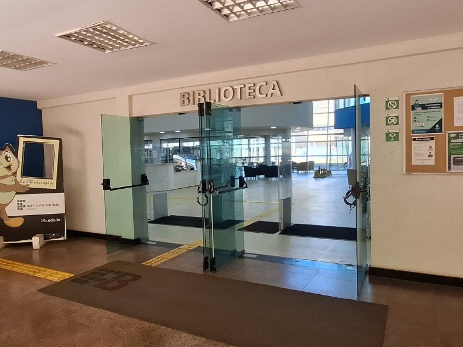
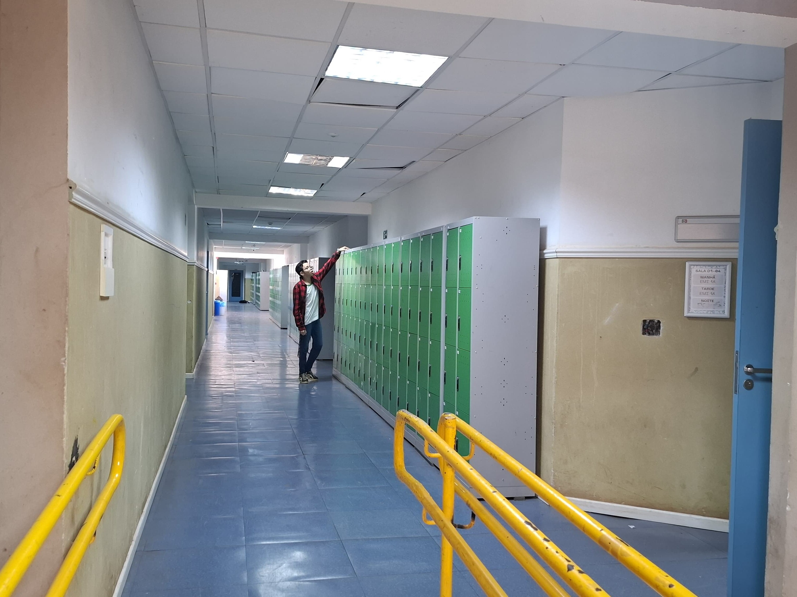
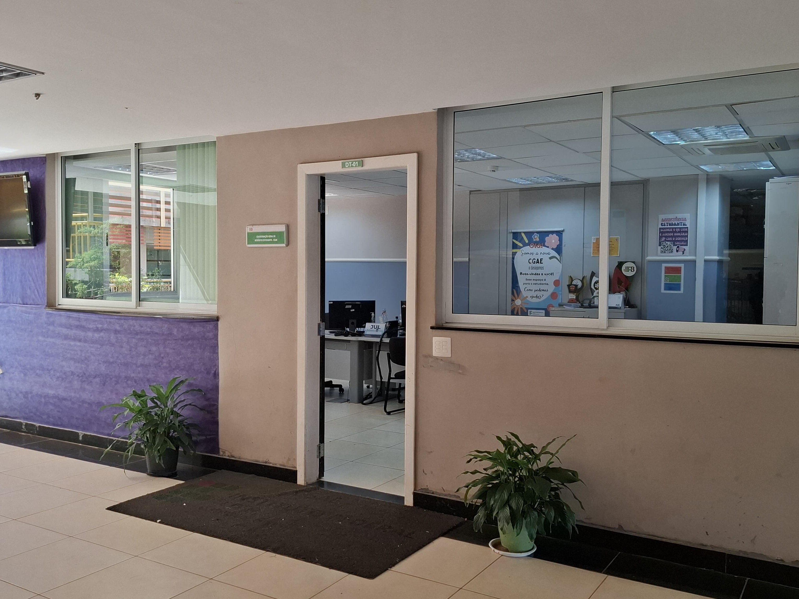

Seja bem-vindo ao IFB Campus Brasília!
Dentre os cursos oferecidos, destaca-se o curso técnico em Informática integrado ao Ensino Médio, que possibilita ao estudante cursar, ao mesmo tempo, as disciplinas do ensino médio e a formação técnica na área de informática. Esse curso prepara os alunos para atuarem no desenvolvimento de sistemas, manutenção de computadores, programação, redes e outras áreas da tecnologia, aliando uma sólida formação geral a conhecimentos técnicos que ampliam as oportunidades no mercado de trabalho e no ingresso ao ensino superior.

Historia dos Institutos Federais de Brasília
Os Institutos Federais de Brasília (IFB) fazem parte da Rede Federal de Educação Profissional, Científica e Tecnológica, criada em 2008 com o objetivo de expandir o acesso à educação pública de qualidade no Brasil. O IFB foi oficialmente instituído em 2008, com sede em Brasília, no Distrito Federal, oferecendo ensino técnico, tecnológico e superior gratuito. Com o tempo, o instituto cresceu e passou a contar com vários campi distribuídos pela capital, como o Campus Brasília (na 610 Norte), Ceilândia, Taguatinga, Samambaia, entre outros. O IFB se destaca por sua atuação inclusiva, foco na inovação, e compromisso com a formação profissional integrada à cidadania e ao desenvolvimento regional.

Conheça o IFB
Biblioteca
Biblioteca de dois andares, livros de todos os tipos. Salas para fazer trabalho em grupo. Computadores na lateral da biblioteca se precisar estudar e não tiver um
Corredor das Salas
Corredor das salas do Ensino Médio Integrado.
Entrada da Instituição

Entrada da Instituição virada para a L2.
CGAE
Lugar responsável para qualquer duvida que tiver na escola, como uma secretaria estudantil.
Benefícios do Estudante
Estudar no IFB - Campus Brasília é muito mais do que apenas assistir aulas. A instituição oferece uma formação pública e de qualidade, com diversas oportunidades para o crescimento acadêmico, profissional e pessoal dos estudantes. Desde programas de iniciação científica, monitoria e projetos de extensão até auxílios financeiros que garantem a permanência dos alunos, o IFB proporciona um ambiente acolhedor, inovador e cheio de possibilidades. Além disso, eventos, intercâmbios e atividades culturais completam a experiência de quem estuda aqui. É o lugar ideal para quem quer aprender, crescer e transformar o mundo ao seu redor.